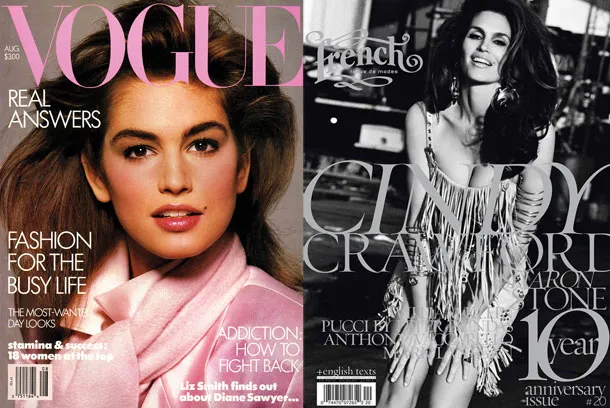

Welcome to the vibrant world of our magazine section, where we showcase the essence of beauty, fashion, and the latest trends in the modeling industry. Immerse yourself in captivating editorials, insightful interviews with top models and industry insiders, and exclusive behind-the-scenes glimpses of photo shoots and fashion shows. Explore our curated content that celebrates diversity, creativity, and the power of self-expression. From glamorous spreads featuring haute couture to thought-provoking articles on body positivity and inclusivity, our magazine section is a reflection of the dynamic and ever-evolving landscape of modeling. Whether you're a seasoned fashion aficionado or simply curious about the magic behind the lens, our magazine section offers a captivating journey into the world of modeling, where style meets substance and every page tells a story. Join us as we redefine beauty and celebrate the unique talents that make the modeling industry an inspiring and inclusive community.
